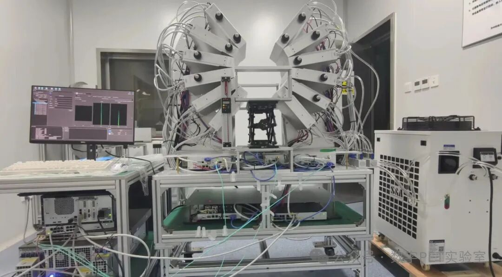
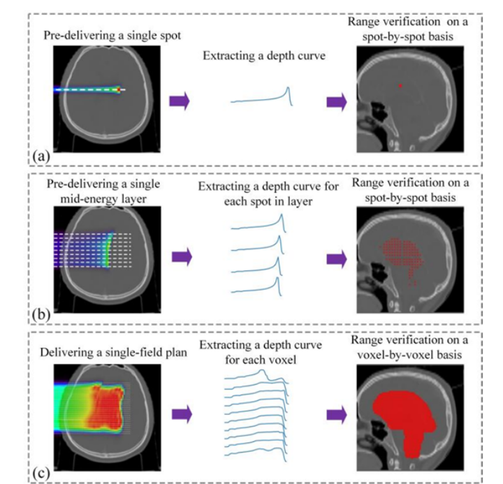
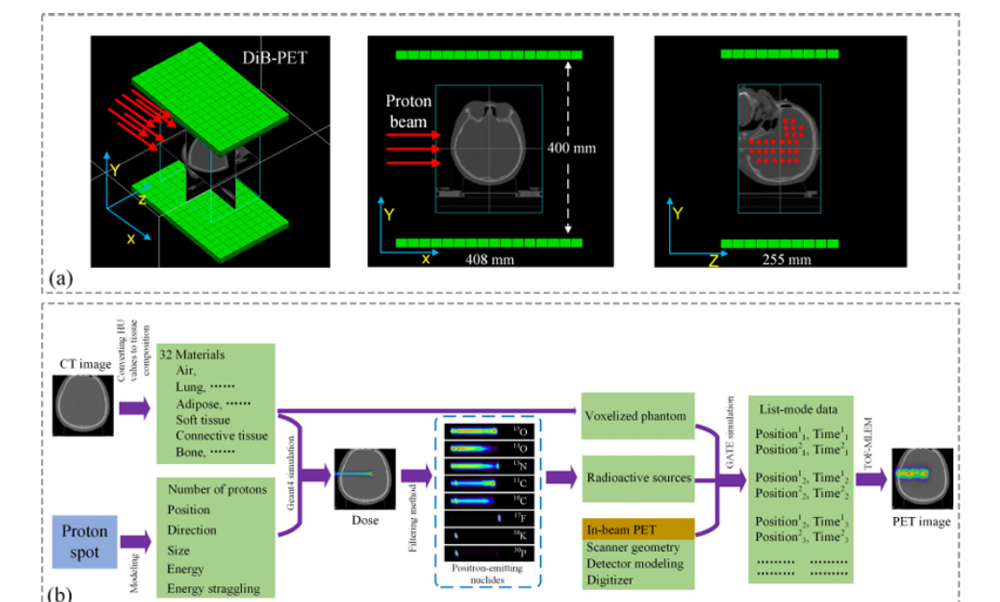
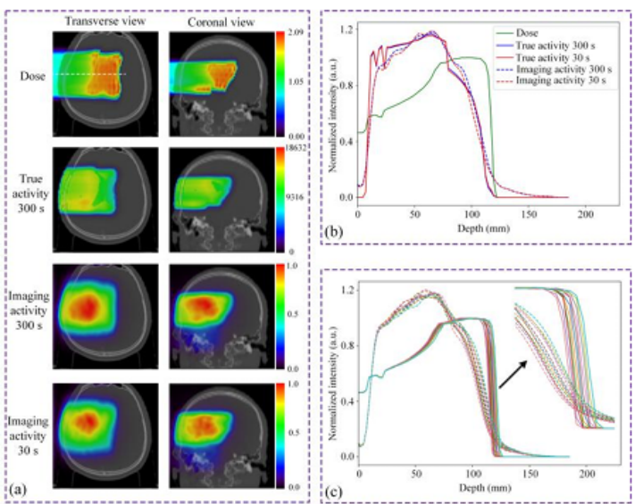

Online Monitoring Proton Therapy’s “Camera System” Upgraded!
Proton therapy PET, as one of the representative achievements of the Digital PET 2.0 innovation system, has always been the research direction of Digital PETers in cutting-edge exploration. Developing technology for online monitoring of proton therapy to "see through" where the proton beam hits, how deep it penetrates, and how much dose is delivered, is of great significance for fully leveraging the Bragg peak dose characteristics of proton beams and achieving precise proton therapy for tumors.
During proton therapy, proton beams striking human tissue generate short-half-life positron-emitting nuclides (particle signals). Conventional PET "camera systems" encounter three problems when collecting signals offline:
"Missed Capture": Most ¹⁵O decays before acquisition;
"Image Ghosting": Patient position registration errors between proton therapy and PET imaging;
"Image Distortion": Changes in nuclide activity distribution due to biological washout effects;
Whereas In-beam PET based on all-digital technology, with its in-situ integration and online imaging characteristics, can effectively solve these three problems.
Since 2017, Digital PETers have successively developed a dual-panel In-beam PET prototype system and a proton beam energy transport observation device in biological tissue, and conducted a series of phantom and animal experimental studies, achieving preliminary results in principle verification, technology development, and scientific discovery.
Building on this research foundation, developing clinically applicable In-beam PET products and enabling digital PET to be truly used in the clinical "practice" of proton therapy has become increasingly urgent for achieving precise tumor treatment with proton therapy at an early date.

Recently, Digital PETers and PhD candidates Dengyun Mu, Ao Qiu, and others, based on all-digital PET detectors, simulated and modeled a dual-panel In-beam PET system for clinical proton therapy monitoring.
Compared to the prototype, it's like upgrading from an ordinary camera to a high-speed, wide-angle, high-definition camera—this online monitoring proton therapy "camera system" has achieved comprehensive upgrades—
See better (good TOF resolution brings better imaging);
See wider (large detection area brings larger imaging field of view);
And more sensitive (higher detection efficiency).
Digital PETers used advanced computer simulation technology (Monte Carlo simulation) to test whether this new system can accurately measure how far the proton beam travels in the body (range verification).
Mainly tested three different "targeting" methods: single shot (single pencil beam), a row of shots (single energy layer pencil beam), and a full "treatment package" (spread-out Bragg peak).

The results were excellent! Simulations showed that regardless of the delivery method, this new system could accurately measure range with precision within 1 mm error.
This result was published in the journal IEEE Transactions on Radiation and Plasma Medical Sciences under the title "Investigation of a Dual-Panel In-Beam PET Based on Digital Detectors for Proton Therapy Monitoring With Different Monitoring Strategies: A Simulation Study."


The online monitoring simulation study of intra-fraction and inter-fraction proton therapy based on dual-panel In-beam PET conducted by Digital PETers preliminarily verified the feasibility of transitioning proton therapy online monitoring from prototype systems to clinical treatment applications, providing confidence and basis for subsequent development of clinically oriented proton therapy PET. In the future, doctors are expected to use this real-time navigation system to monitor online where the proton beam hits, how much dose is delivered, and how deep it penetrates, helping make treatments more accurate, safer, and more effective.